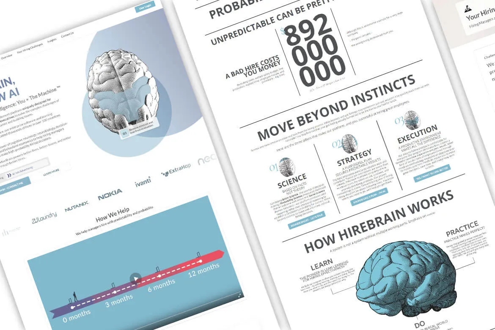
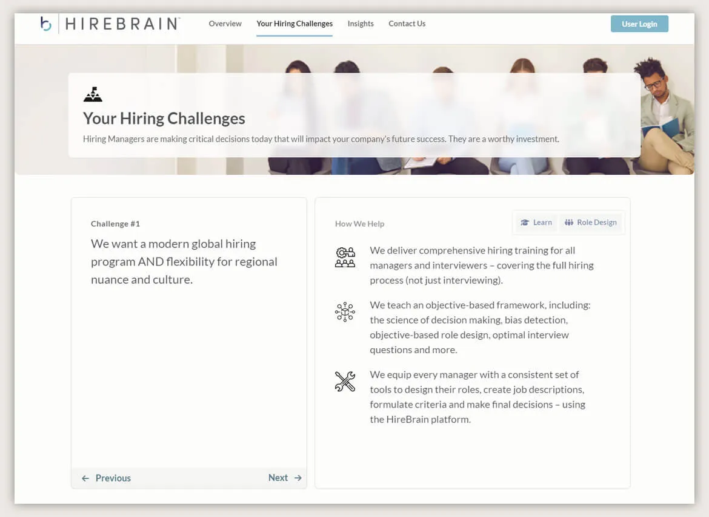
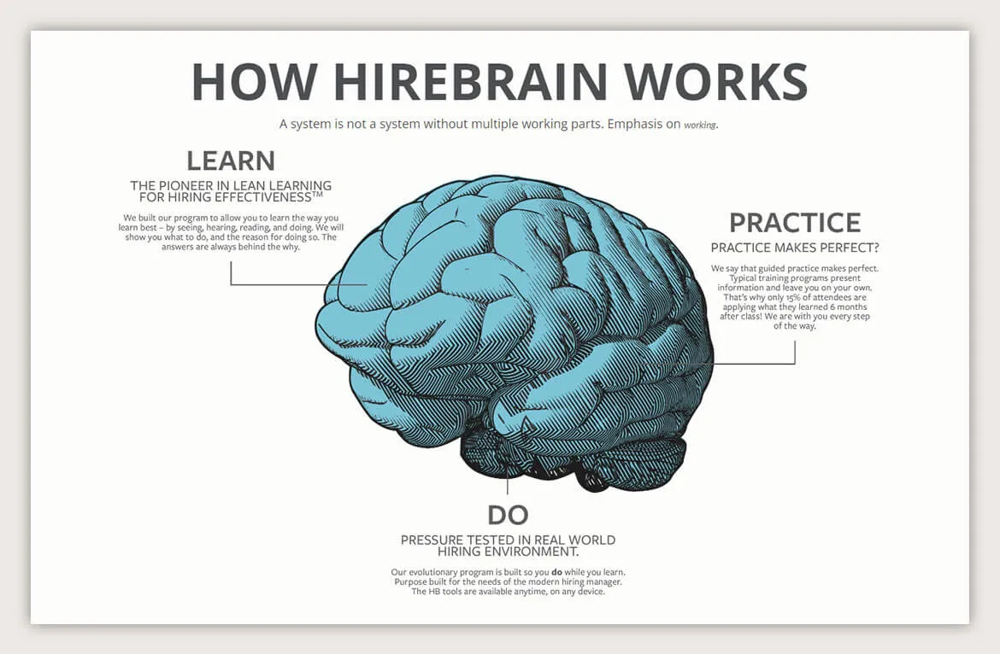

HIREBRAIN
HireBrain is a unique hiring enablement platform designed specifically for managers, leaders, and executives with a customized solution to address many of the complexities of role design, acquiring talent, and building teams.
CloudConverge… stems from a project to make things better. We tapped into Artificial Intelligence (AI) to fix some pain points to make things move smoother and user-friendly experiences. The project leveraged AI to automatically populate forms eliminating manual process pain points and other performance slowing bugs.
The primary goal of the project was to eliminate all the manual data-entries and process flows by integrating AI to automatically fill forms thus, eliminating the need to manually complete forms. Furthermore, the project team targeted all outstanding bugs to enhance performance and a better experience.

AI Integration for Form Filling
AI’s application for completing forms was a disruptor. Considering that the original process included manually typing responses, AI was used to complete the forms by analysing the forms and providing the correct answers. This substantially decreased data entry time and also reduced the risk of new errors; a clear boost to total efficiency.
The biggest usability factor was the generation of AI suggestions, which offered relevant answer suggestions as users were completing forms to help not only hasten the process, but also to offer usable suggestions as quickly and effectively as possible. In user conversations, they noted their efficiencies in relation to their workflow improved.
AI-Generated Suggestions
One notable feature was the introduction of AI-generated suggestions, which provided users with relevant answer suggestions as they completed forms. This not only expedited the process but also enhanced usability by offering prompt and accurate recommendations. Users reported a noticeable improvement in their workflow efficiency.

Bug fixes for better performance
During the project, there were quite a number of bugs that were creating performance issues with the system or the user experience. The team was also able to diagnose the main issues which were contributing to said bugs. The team took a systematic approach to work through one bug at a time to ensure that the fixes were successful and that nothing else introduced further issues to the bugs in the software.
Effects and outcomes
The incorporation of AI for form completion greatly reduced time spent on data entry, and resulted in a marked increase in productivity. Users reflected that the AI-driven suggestion experience was smoother and, not only did they save time, it increased the accuracy of the answers, as well.
The bug fixing efforts had a material impact on system stability and performance. Users faced less interruption, and as a consequence, there was an overall increase in the reliability of the platform. This subsequently led to higher user satisfaction, and derived a more favourable opinion of the system.

Conclusion
The deliberate use of AI for filling out forms and efficient bug fixing allowed the project to enhance efficiency and user experience in general. These tasks collectively yielded a more organized workflow, reduced human effort, and a more stable and convenient system overall.